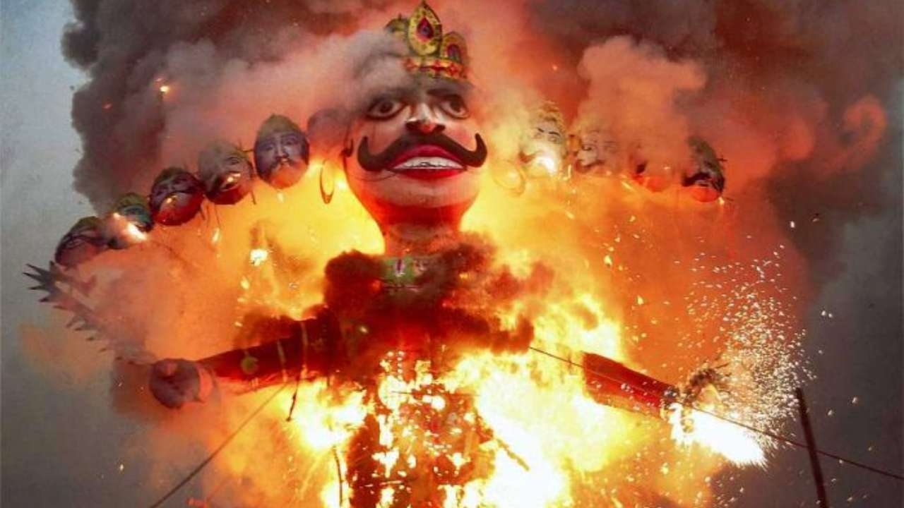

Dussehra, also known as Vijayadashami, is a significant Hindu festival celebrated at the end of Navratri every year. It is observed on the tenth day in the Hindu calendar month of Ashvin, which typically falls in the Gregorian months of September and October. This festival commemorates the victory of Lord Rama over the demon king Ravana, signifying the triumph of good over evil.
In many parts of India, the festival is celebrated by burning effigies of Ravana, often filled with fireworks, symbolizing the destruction of evil. The event is accompanied by music, dance, and feasting, as communities come together to witness the spectacle.
Dussehra also marks the preparation for the festival of lights, Diwali, which is celebrated twenty days after Dussehra. As such, it is a time of renewal and setting intentions for the festive season ahead.
The essence of Dussehra lies in its message of moral righteousness and the power of truth. It is a reminder that no matter how formidable the wrong might seem, it is ultimately truth and goodness that prevails.